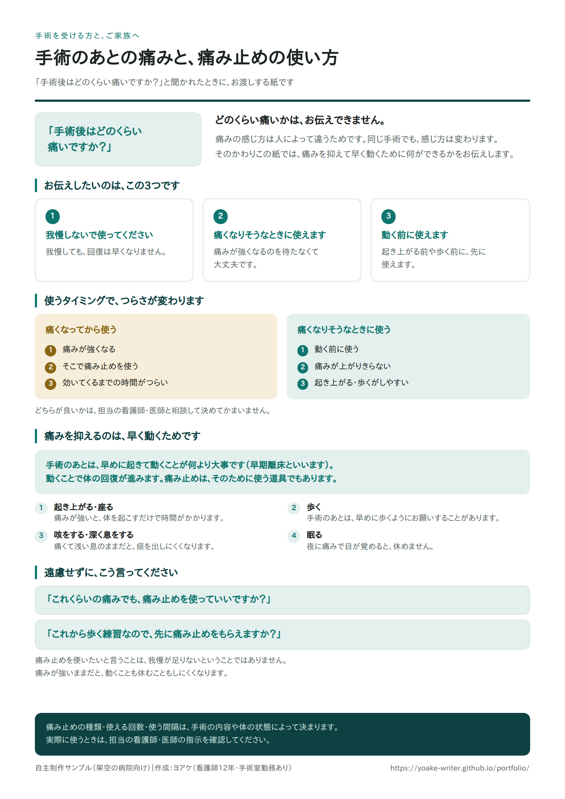
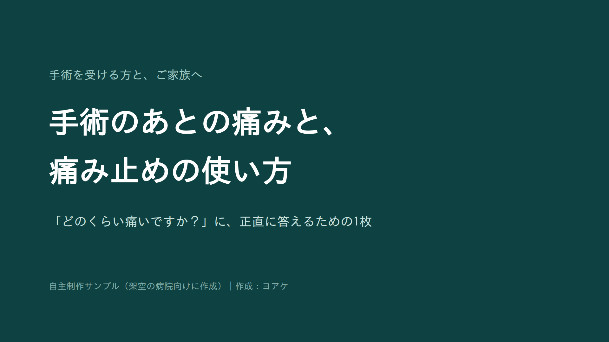
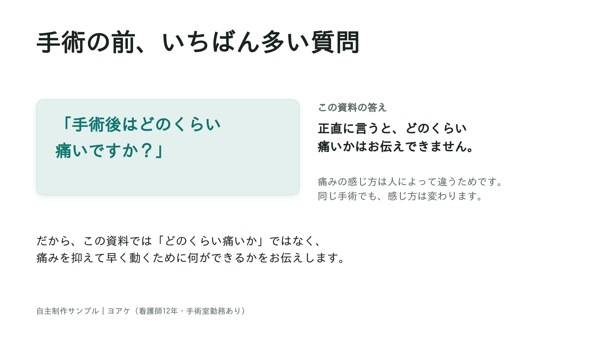
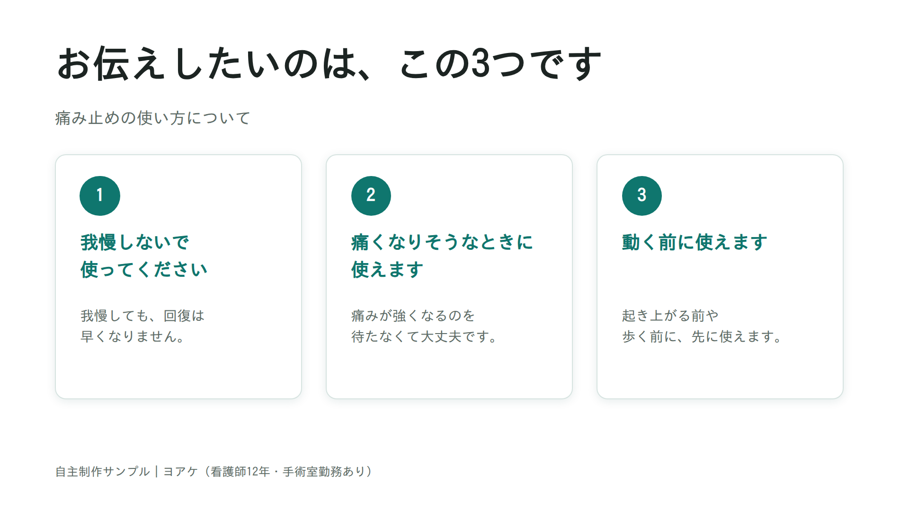
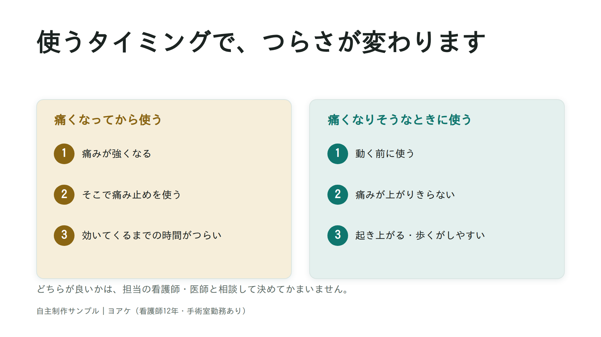
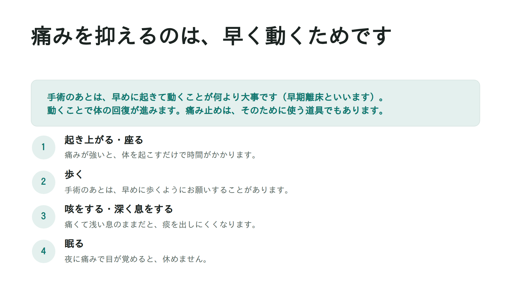
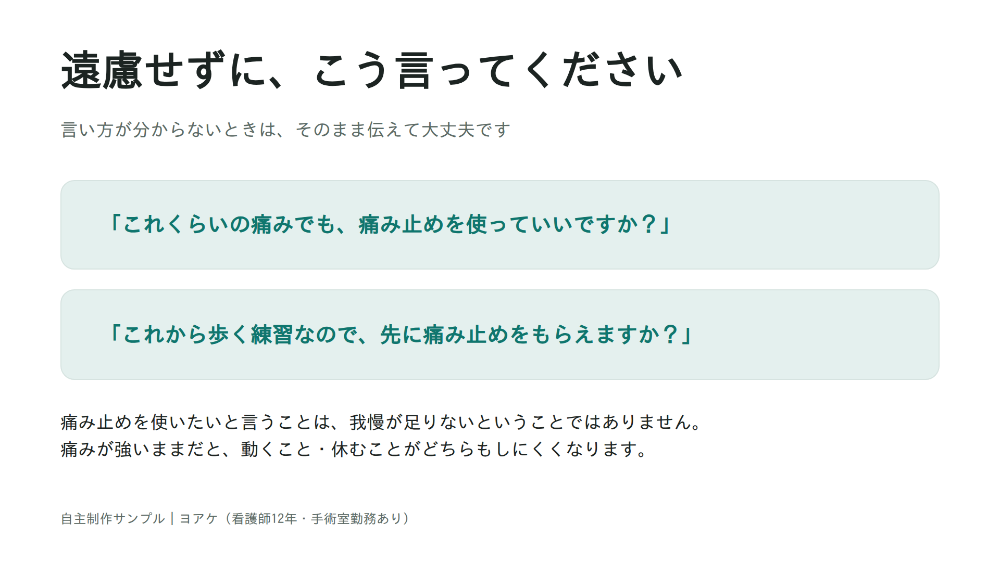
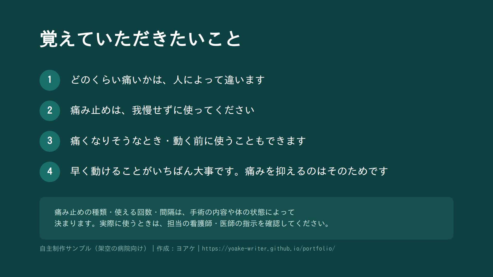

考えたこと
- 「どのくらい痛いか」には答えられないと、正直に書いた。痛みの感じ方は人によって違うので、程度は約束できません。代わりに、患者さんが自分で動かせるところ（痛み止めの使い方）に話を移しています。
- 痛み止めは目的ではなく、早く動くための道具として説明した。早めに痛みを抑えて早期離床する。動くことで回復が進む。その順番を資料の背骨にしています。
- 薬の名前・用量・回数は書かない。手術の内容や体の状態で変わるので、最後に「病院ごとの指示を確認してください」を置きました。
- 「我慢が足りない」と読まれない書き方にした。痛み止めを頼むことへの遠慮を外すのが、この資料の目的です。
- 渡す形は1枚に絞った。手術の前に読むものなので、めくらずに全部見えることを優先しました。ベッドサイドに置いても、家族に渡しても1枚で足ります。説明会などで映す用途にはスライド版を使い分けます。
A4・1枚（実際に渡す形）

A4・1枚。上から順に、いちばん多い質問と答え／伝えたいこと3つ／使うタイミングの比較／早期離床／患者さんが使える言い方／注意
スライド版（全7枚）
同じ内容を、説明会などで映す用にスライドへ組み直したものです。

1／7 表紙

2／7 いちばん多い質問と、その答え

3／7 伝えたいこと3つ

4／7 使うタイミングの比較

5／7 早期離床（この資料の背骨）

6／7 患者さんが使える言い方

7／7 まとめと注意